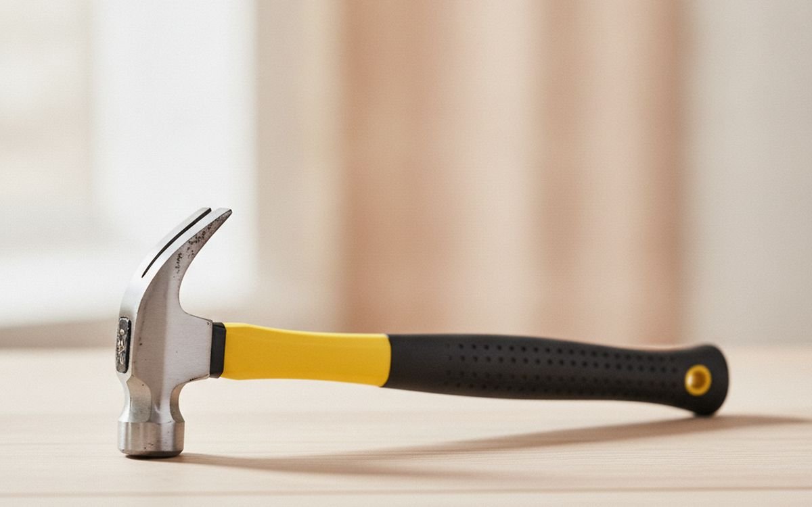
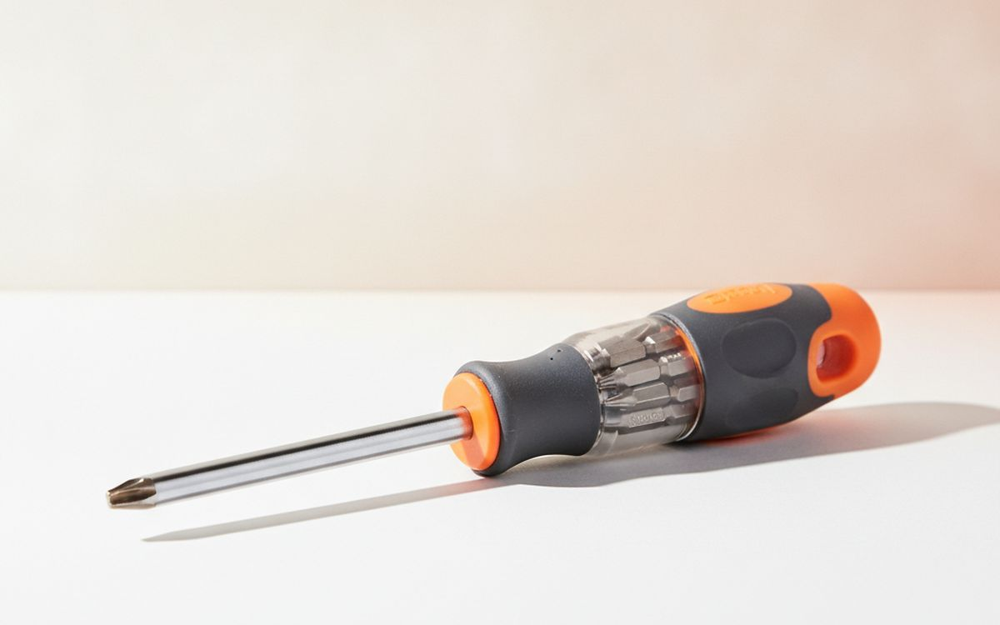
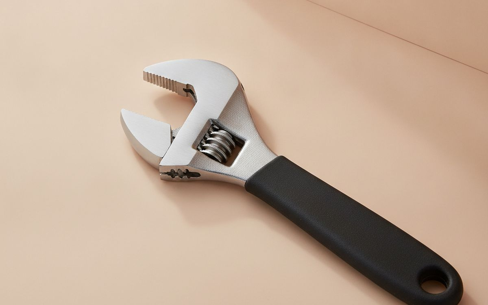
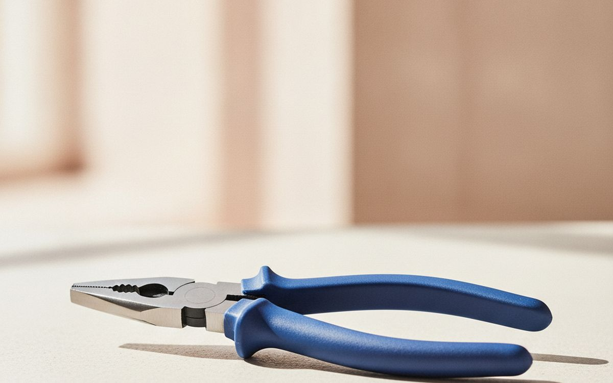
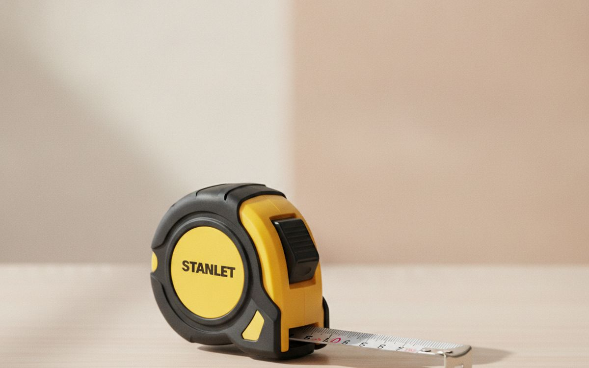
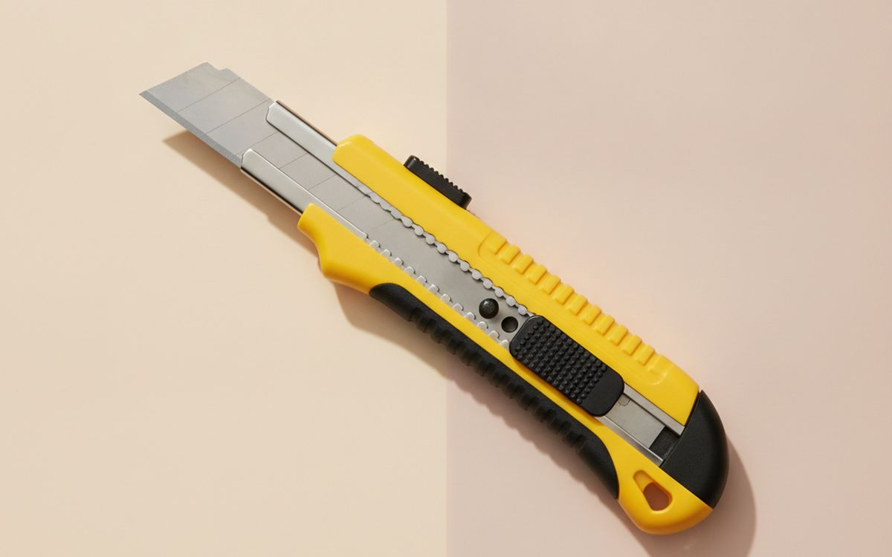
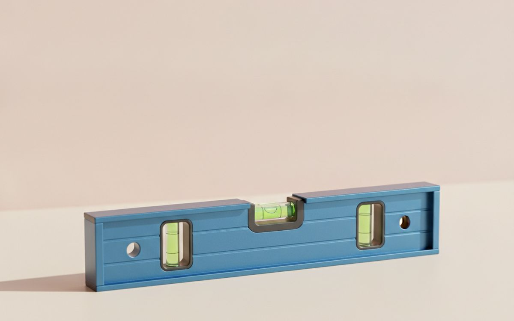
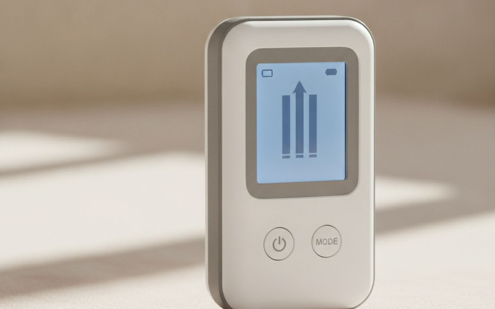
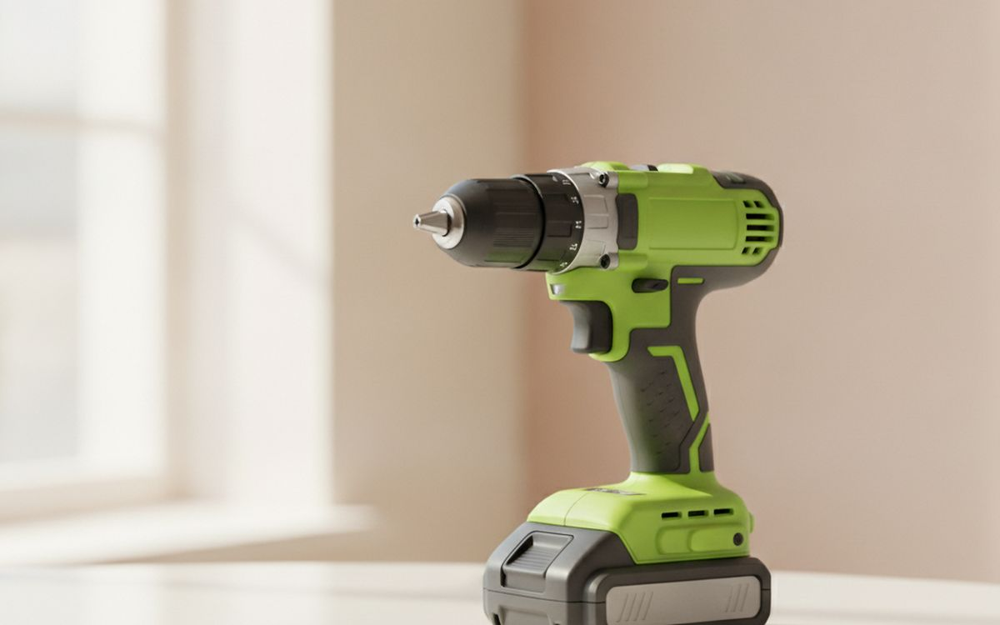
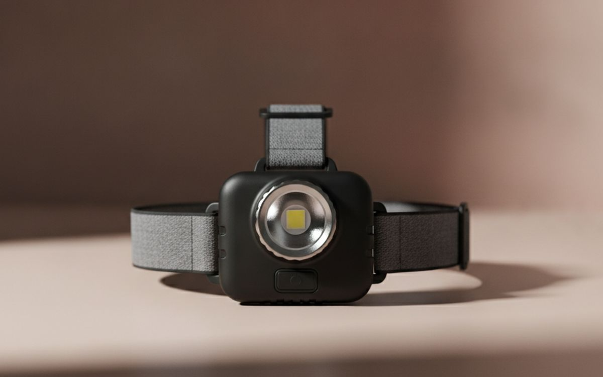

Un pequeño conjunto de herramientas fiables se encarga de la mayoría de las tareas domésticas; evite los artilugios innecesarios hasta que sepa que los necesita.
El mundo de las herramientas para bricolaje puede parecer abrumador. Los estantes están repletos de artilugios especializados, promesas de reparaciones sin esfuerzo y sistemas enteros construidos en torno a baterías patentadas. Es fácil caer en la trampa de comprar más de lo necesario, terminando con una caja de herramientas desordenada llena de objetos de uso poco frecuente. Muchas herramientas se comercializan por su conveniencia, pero pocas ofrecen un valor real para el hogar medio.
Esta guía se centra en las herramientas esenciales que se encargan de la gran mayoría de las reparaciones y proyectos domésticos comunes. Priorizamos la utilidad, la durabilidad y la practicidad sobre la novedad. El objetivo es equiparle con un juego de herramientas pequeño y eficaz que realmente se utilice, sin malgastar dinero en artículos que acumularán polvo. Cada recomendación tiene en cuenta las desventajas, ayudándole a decidir qué merece realmente su inversión.
Aviso. Los enlaces de esta página son de afiliados. Si compras a través de uno podemos ganar una comisión sin coste adicional para ti. No influye en qué entra en esta lista ni en su orden.
Cómo lo elegimos
Identificamos las herramientas basándonos en su reputación, casos de uso comunes y principios de diseño, recurriendo a información ampliamente disponible y al consenso de expertos. No realizamos pruebas prácticas de estos productos. Nuestras selecciones se hacen pensando en el usuario cotidiano, haciendo hincapié en herramientas conocidas por su fiabilidad y diseño funcional en lugar de por las afirmaciones de marketing. Nuestro objetivo es cortar el ruido, ofreciendo consejos prácticos para montar un juego de herramientas domésticas útil y duradero que ofrezca un valor real.
De un vistazo
Los precios son aproximados en el momento de escribir y cambian a menudo.
Las recomendaciones

1
Clava cosas en su sitioStanley FatMax AntiVibe Claw Hammer
$25-40
Un buen martillo es una herramienta fundamental. Este modelo de Stanley utiliza un agarre con control de torsión y un sistema antivibración, que pretende reducir la transferencia de impactos al brazo del usuario. Cuenta con una cabeza de acero forjado para mayor durabilidad y una uña curva para extraer clavos. Aunque básico, un martillo bien equilibrado marca una diferencia significativa para tareas que van desde colgar cuadros hasta demoliciones ligeras. Comprar un martillo barato y mal equilibrado puede hacer que las tareas sean más difíciles y menos seguras debido a un mal agarre o a una absorción de impactos deficiente. Considere el peso de la cabeza detenidamente; entre 16 y 20 onzas es versátil para la mayoría de los usos domésticos sin ser excesivamente pesado.
Por qué está aquí
- Reduce el impacto al golpear
- Cabeza de acero duradera
- Agarre cómodo
Conviene saber
- Más pesado que los modelos básicos
- Cuesta más que un martillo genérico

2
Aprieta y afloja tornillosKlein Tools 11-in-1 Multi-Bit Screwdriver
$20-35
Un destornillador multitaladro ahorra espacio y ofrece versatilidad. Este modelo de Klein Tools incluye varias puntas Phillips, planas, Torx y cuadradas comunes, además de llaves de vaso. Las puntas se guardan dentro del mango, lo que reduce la posibilidad de perderlas. Su diseño busca un agarre cómodo, crucial para aplicar par sin fatiga en las manos. Para un uso ocasional, un destornillador multitaladro suele sustituir a un juego completo de destornilladores individuales. Sin embargo, para aplicaciones específicas de alto par o uso frecuente, los destornilladores de espiga completa dedicados pueden ofrecer una mayor durabilidad y palanca. Elija un juego con puntas endurecidas para resistir el desgarro.
Por qué está aquí
- Ahorra espacio
- Cubre muchos tipos de fijaciones
- Almacenamiento de puntas integrado
Conviene saber
- Se pueden perder las puntas individuales
- Menos palanca que los destornilladores de espiga completa

3
Agarra y gira tuercasCrescent AC18CVN 8-inch Adjustable Wrench
$15-25
Una llave ajustable se adapta a varios tamaños de tuercas y tornillos con una sola herramienta. La marca Crescent se asocia a menudo con estas llaves. Un tamaño de 8 pulgadas es un buen compromiso para la mayoría de las tareas domésticas, desde reparaciones de fontanería hasta el montaje de muebles. Busque una tolerancia de mandíbula ajustada para evitar resbalones y redondear las fijaciones. La calidad del mecanismo de la mandíbula influye directamente en su eficacia. Aunque es conveniente, una llave ajustable no puede aplicar tanto par como una llave de estrella o abierta fija sin riesgo de resbalar. Es una herramienta generalista, no una especialista para trabajos pesados.
Por qué está aquí
- Versátil para muchos tamaños
- Conveniencia de una sola herramienta
- Relativamente económica
Conviene saber
- Puede resbalar si no se ajusta bien
- Menos precisa que las llaves fijas
- Voluminosa

4
Agarra, gira, tira de cosasChannellock 440 12-inch Tongue & Groove Pliers
$20-35
Los alicates Channellock son conocidos por su poder de agarre y su mandíbula ajustable. Estos alicates de junta deslizante son muy versátiles para fontanería, automoción y reparaciones domésticas generales. El diseño de múltiples ranuras permite ajustes precisos de la mandíbula para adaptarse de forma segura a diferentes tamaños de tuberías y tuercas. Sus largos mangos proporcionan una buena palanca. Aunque son excelentes para sujetar formas irregulares o tuberías, no están diseñados para cortar ni para manipulación fina como los alicates de punta de aguja. El modelo de 12 pulgadas ofrece un buen alcance y palanca para la mayoría de las tareas sin ser difícil de manejar. Evite alternativas más baratas que a menudo tienen mecanismos de mandíbula sueltos e imprecisos.
Por qué está aquí
- Agarre fuerte en diversas formas
- Ancho de mandíbula ajustable
- Buena palanca
Conviene saber
- No aptos para trabajos de precisión
- Pueden rayar superficies
- Más voluminosos que otros alicates

5
Mide objetos con precisiónStanley FatMax 25-foot Tape Measure
$20-35
Una cinta métrica fiable es crucial para cualquier proyecto que requiera precisión. La Stanley FatMax es popular por su duradera cinta y su gran capacidad de extensión, lo que significa que la cinta permanece rígida cuando se extiende más sin colapsar. Una longitud de 25 pies es práctica para la mayoría de las necesidades domésticas, ofreciendo suficiente alcance para las dimensiones de las habitaciones o materiales grandes. Busque marcas claras y un robusto mecanismo de bloqueo. Aunque existen cintas métricas digitales, a menudo añaden complejidad innecesaria y posibles puntos de fallo para el uso general. La contrapartida de la durabilidad y la extensión a menudo significa una carcasa ligeramente más pesada, pero esto es una preocupación menor para la mayoría de los usuarios.
Por qué está aquí
- Cinta duradera
- Gran extensión
- Marcas claras
- Bloqueo fuerte
Conviene saber
- Más pesada que las cintas básicas
- Puede ser voluminosa para bolsillos pequeños

6
Corta materiales gruesosOLFA L-1 Heavy-Duty Utility Knife
$10-20
Un buen cúter es indispensable para abrir cajas, cortar cartón, recortar alfombras o marcar placas de yeso. El OLFA L-1 presenta un mango robusto y un diseño de cuchilla a presión. Esto significa que siempre tendrás un filo afilado sin necesidad de reemplazar toda la cuchilla a menudo. Simplemente rompe el segmento desafilado. El diseño de alta resistencia proporciona un agarre firme y un mejor control que los cúteres más pequeños. Aunque son convenientes, las cuchillas a presión pueden ser frágiles si se usan incorrectamente para hacer palanca o aplicar fuerza lateral excesiva. Asegúrate de usar un rompe-cuchillas designado o alicates para una eliminación segura de los segmentos. Ten a mano cuchillas de repuesto.
Por qué está aquí
- Siempre un filo afilado
- Agarre robusto
- Corta diversos materiales
Conviene saber
- Las cuchillas pueden romperse si se usan mal
- Requiere una cuidadosa eliminación de segmentos de la cuchilla

7
Asegura que las cosas estén rectasEmpire EM81.12 True Blue 12-inch Magnetic Torpedo Level
$15-25
Para colgar estantes, cuadros o alinear electrodomésticos, un nivel es esencial. Este nivel torpedo de Empire es compacto y cuenta con tres burbujas para mediciones horizontales, verticales y de 45 grados. El borde magnético es una característica útil para trabajar con manos libres en superficies metálicas, como tuberías de fontanería o montantes de acero. Su pequeño tamaño lo hace fácil de almacenar y usar en espacios reducidos. Si bien un nivel de 12 pulgadas es versátil, proyectos más grandes como la construcción de una terraza podrían beneficiarse de un nivel más largo para una mayor precisión a distancia. Sin embargo, para la mayoría de las tareas domésticas, la precisión de un nivel torpedo es suficiente y práctica.
Por qué está aquí
- Compacto y portátil
- Borde magnético
- Tres ángulos de medición
Conviene saber
- Demasiado corto para proyectos grandes
- Uso limitado más allá de la nivelación

8
Encuentra soportes ocultos en la paredZircon StudSensor HD55 Stud Finder
$30-50
Antes de colgar algo pesado, localizar los montantes de la pared es fundamental. El Zircon StudSensor HD55 es un detector de montantes electrónico fiable que detecta los bordes de montantes de madera y metal hasta 1,5 pulgadas de profundidad. También incluye una detección de advertencia de cables de CA que indica la presencia de cableado eléctrico activo y sin blindaje. Esta característica añade una capa de seguridad. Aunque los detectores de montantes electrónicos son generalmente precisos, pueden producirse falsos positivos, especialmente con materiales de pared inconsistentes o construcciones antiguas. Escanee siempre un área varias veces y desde diferentes direcciones para confirmar los hallazgos. La duración de la batería puede ser una preocupación con un uso frecuente.
Por qué está aquí
- Detecta montantes de madera y metal
- Advierte de cables de CA activos
- Fácil de usar
Conviene saber
- Puede dar falsos positivos
- Requiere baterías
- Penetración de profundidad limitada

9
Perfora agujeros, atornillaRyobi P215 18V ONE+ Cordless Drill/Driver
$80-120
Un taladro/atornillador inalámbrico acelera significativamente las tareas de montaje e instalación. El sistema Ryobi 18V ONE+ es popular por su amplia gama de herramientas compatibles que utilizan la misma plataforma de baterías. Este taladro ofrece ajustes de velocidad variable y un embrague para evitar el sobre-atornillado de tornillos. Es lo suficientemente potente para la mayoría de las perforaciones domésticas en madera o metal ligero, y para atornillar diversos tornillos. El principal inconveniente es la batería, que debe comprarse por separado si eres nuevo en la plataforma, lo que aumenta el coste inicial. Las baterías también pierden carga con el tiempo y su rendimiento en condiciones de frío. Considera tus necesidades de batería.
Por qué está aquí
- Versátil para taladrar y atornillar
- Parte de un sistema de baterías más grande
- Control de velocidad variable
Conviene saber
- Batería y cargador se venden por separado
- Las baterías se degradan con el tiempo
- Menos potente que los taladros con cable

10
Ver en espacios oscurosBlack Diamond Spot 400 Headlamp
$40-60
La buena iluminación a menudo se pasa por alto hasta que estás trabajando en un espacio reducido y oscuro como debajo de un fregadero o en un ático. Un frontal como el Black Diamond Spot 400 mantiene tus manos libres y dirige la luz hacia donde mires. Ofrece varios ajustes de brillo, incluido un modo de luz roja para preservar la visión nocturna. La salida de 400 lúmenes es suficiente para la mayoría de los trabajos de cerca. Si bien las linternas simples pueden funcionar, un frontal libera ambas manos para las herramientas, mejorando la seguridad y la eficiencia. El principal inconveniente es la duración de la batería, especialmente en los ajustes de brillo más altos, y la necesidad de llevar baterías de repuesto para tareas prolongadas.
Por qué está aquí
- Iluminación manos libres
- Brillo ajustable
- Modo de luz roja
Conviene saber
- La duración de la batería varía
- Puede ser incómodo para uso prolongado
- No apto para iluminación de áreas amplias
Preguntas frecuentes
¿Realmente necesito un taladro eléctrico potente para tareas básicas?
Para colgar cuadros sencillos o montar muebles, un buen juego de destornilladores manuales suele ser suficiente. Un taladro inalámbrico acelera significativamente las tareas repetitivas, pero es una inversión mayor. Considera la frecuencia con la que anticipas necesitar atornillar docenas de tornillos o taladrar agujeros más grandes en madera. Si tus proyectos son pocos y espaciados, el coste del taladro, la batería y el cargador podría superar la conveniencia. Las herramientas manuales son siempre fiables y nunca se quedan sin carga.
¿Merece la pena comprar un juego de herramientas barato y todo en uno de una gran superficie?
A menudo, no. Estos juegos prometen conveniencia pero suelen incluir herramientas de baja calidad hechas de metales más blandos que se desgastan fácilmente o se rompen bajo estrés moderado. Aunque atractivos por su bajo precio, normalmente acabas reemplazando varios artículos rápidamente. Generalmente es mejor comprar versiones individuales y bien valoradas de las pocas herramientas que realmente utilizarás. Un martillo o una llave baratos pueden ser frustrantes e incluso inseguros.
¿Qué importancia tiene la marca de la herramienta cuando solo hago reparaciones ocasionales?
La marca importa por la consistencia y la fiabilidad, incluso para uso ocasional. Las marcas establecidas a menudo tienen un mejor control de calidad, utilizan materiales más duraderos y ofrecen diseños más ergonómicos. Esto significa que las herramientas funcionan como se espera y duran más. No necesitas comprar las herramientas de grado profesional más caras, pero evitar las marcas sin nombre puede prevenir la frustración y el fallo prematuro. Una herramienta que falla a mitad de una reparación crea más problemas de los que resuelve.
¿Debería comprar un taladro con cable o inalámbrico?
Para la mayoría de los aficionados al bricolaje doméstico, un taladro inalámbrico ofrece una comodidad superior debido a su portabilidad y a la ausencia de cable de alimentación. Esto lo hace ideal para trabajar en cualquier lugar, incluso al aire libre o en zonas sin enchufes fácilmente disponibles. Sin embargo, los taladros inalámbricos requieren gestión de la batería, y las baterías eventualmente se degradan. Los taladros con cable ofrecen una potencia constante e ilimitada para tareas continuas y de alta resistencia, y son generalmente más ligeros sin el paquete de baterías. Para un primer taladro, el inalámbrico suele ser más práctico para trabajos pequeños y variados.
← Todas las guías
Hemos solicitado unirnos al Programa de Afiliados de Amazon. Todavía no somos Afiliados de Amazon y hoy no ganamos nada con los enlaces a Amazon. Los precios y la disponibilidad son correctos en la fecha de publicación y pueden cambiar.